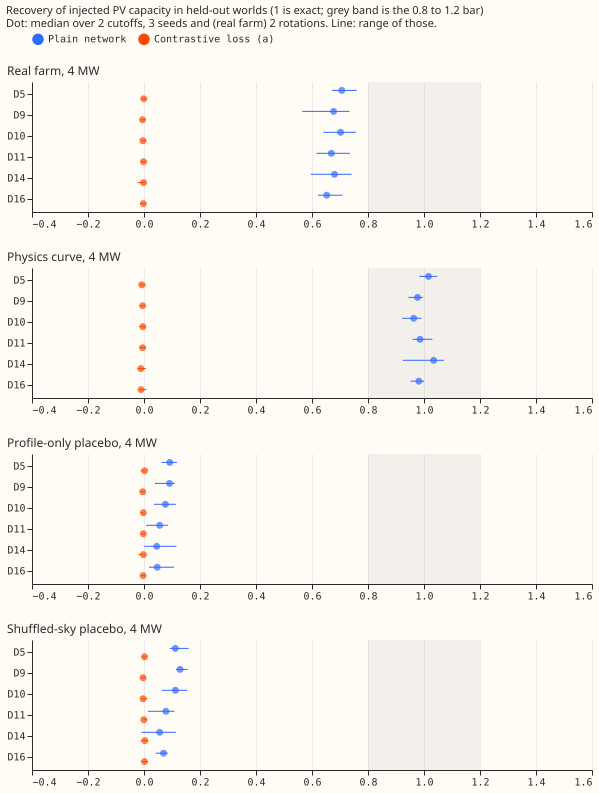
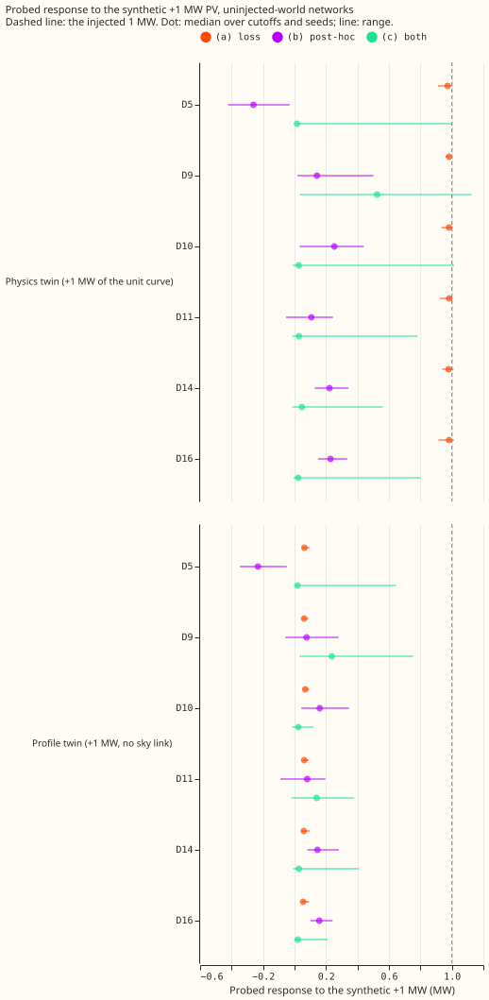
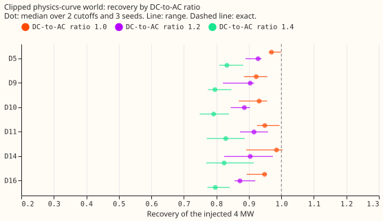
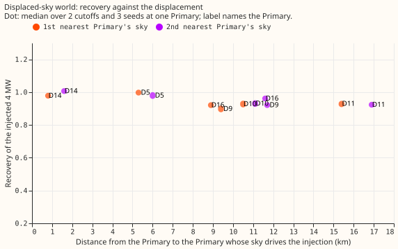

Contrastive injection arms for the donor-day PV probe
The contrastive loss failed: it takes real-farm recovery from 0.68 to 0.00, at every Primary, and raises the validation CRPS by 37% (all 16 Primaries) to 59% (the six MW Primaries). The pre-registered stop rule (real-farm median recovery of arm (a) under 0.70) fired, so no rescue tuning was run. The loss was built as a paired-difference term and tested in three arms. A separate diagnosis, requested after experiments 621 and 623, explains most of why a real farm reads 0.68 where the physics curve reads 0.97: a real farm scaled to a given 99th-percentile output has 0.72 to 0.84 of the energy of the physics curve scaled the same way.

The contrastive arms
Every real training row of the six MW Primaries has a physics twin (+1 MW of the unit curve) and a profile twin (+1 MW with no sky link), each with its own embedding vector. Arm (a) trains with the twin rows and a paired-difference term. Arm (b) refits only the twin vectors of experiment 621's plain networks. Arm (c) applies the refit to arm (a)'s networks. Each network is also trained in one held-out world, as in experiment 621.
| Bar | Plain network (experiment 621) | Arm (a), contrastive loss |
|---|---|---|
| Median 4 MW real-farm recovery in 0.80 to 1.20 at 4 of 6 Primaries | Fail, 0 of 6 (median 0.68) | Fail, 0 of 6 (median 0.00) |
| Physics-curve world recovery (context) | 0.98 | -0.01 |
| 95th percentile of each placebo under 0.25 at 4 of 6 | Pass (largest 0.16) | Pass (largest 0.01; recovery is 0 everywhere) |
| Spurious capacity from a strong linear cloud load under 0.20 of a 2 MW farm (regression without the cloud template) | 0.39 to 0.45 (above 0.20) | 0.00 |
| Same, with the cloud-template regression (sensitivity) | Pass | Pass (0.00 to 0.03) |
| 80% interval covers the injected capacity in at least 60% of real-farm and physics-curve injections | Fail, 23% (real farm 0%, physics curve 69%) | Fail, 0% |
| Validation CRPS within 1% of the plain network's | Fail: 0.50 MW against 0.36 MW at all 16 Primaries (2026-03), 0.44 against 0.28 MW at the six MW Primaries |
- Scoring of the pre-registered predictions. Prediction (1) is refuted (median 0.00). Prediction
(2) holds, trivially, because arm (a) reads zero in every world. Prediction (3) holds with the
cloud template. Prediction (4) is refuted (0% coverage). Prediction (5) is refuted (CRPS up 37% to
59%). Prediction (6) is refuted: arm (b) reads the physics twin at about 0.20 MW, not near 1 MW. -
The cloud bar has two versions. The original bar, with the cloud template in the regression,
passes. The amended headline bar, without the template, fails for the plain network (0.39 to
0.45). - Arm (a) passes the placebo bars only because it reads zero in every world. The probe
response of the network through the real Primary's vector is flat, including in the physics-curve
world. - In sample, the twin vectors read the synthetic +1 MW. The physics twin reads 0.98 to
1.03 MW and the profile twin 0.05 to 0.07 MW, so the loss was satisfied on the twin rows while the
network fitted the real rows badly. The validation negative log-likelihood of arm (a) is 0.61 to
0.74 against 0.42 for the matched control (
nopair: twin rows in the likelihood, no paired-difference term). - The matched control shows that the twin rows alone do not change recovery. Thenopairnetworks recover a real farm at a median of 0.70 (0.68 to 0.74 across Primaries), against 0.68 for the plain network. - The post-hoc check (b) cannot absorb the synthetic +1 MW. Fitting only the twin vector of a plain network recovers a median of 0.20 MW of the physics twin's 1 MW (range -0.26 to 0.25 over Primaries, for the uninjected networks), and 0.11 MW of the profile twin. Arm (c) recovers a median of 0.00 MW over worlds (0.02 to 0.52 MW over Primaries in the uninjected world). A frozen network may not let one 8-wide embedding vector reproduce a sky response. - A calibration from the physics twin would not have found the real-farm shortfall. In the arms where the loss ran, the physics twin was read at about 1, whereas a real farm reads 0.68.

Calibration and interval coverage (changes agreed after experiments 621 and 623)
For the plain network, the leave-one-farm-out factor (median 4 MW real-farm recovery of the networks whose farm differs) is 0.683, 0.684, 0.678, and 0.684 when holding out farms A, B, C, and F, so the factor is stable and lies in 0.55 to 0.85 for all 4 farms. Farms D and E are not injected, so the stability bar is judged over 4 farms, not 6. The calibrated recovery is 1.00 by construction, because the factor is the median recovery. The raw interval, widened by the spread of per-farm recoveries, covers the injected capacity in 0% of real-farm injections, because it is centred on 0.68. The calibrated interval, widened by the spread of the factors, covers 68% (experiment 624's plain networks), 72% (experiment 621's plain networks), and 69% (experiment 623's monotone networks). Arm (a)'s recovery is zero, so a factor fitted to it is meaningless and is not reported. With the cloud template in the regression, the per-farm recovery falls to 0.04 to 0.10, which is why the template is a sensitivity row and not the headline.
Why a real farm reads 0.68 and the physics curve 0.97
Three cheap tests, each with one set of plain networks, address three hypotheses.

Test 1, scaling audit: the injected real farm has 0.72 to 0.84 of the physics curve's energy over all daylight half-hours. Each farm's series is its output divided by its own 99th percentile and then multiplied by the injected MW, so the injected series reaches the injected MW at its 99th percentile by construction (observed 99th percentile 1.000 to 1.003 for farms A, B, C, and F). The physics curve is scaled the same way. At the same half-hours, on each Primary's own CAMS shortwave, the sum of a farm's series is 0.72 to 0.84 of the sum of the physics curve:
| Farm | Mean ratio to the physics curve, six MW Primaries (range) |
|---|---|
| A | 0.72 to 0.78 |
| B | 0.74 to 0.79 |
| C | 0.79 to 0.81 |
| F | 0.81 to 0.84 |
A probe that recovers energy exactly would read 0.97 times 0.79, about 0.77, for a real farm. The measured 0.68 is 0.88 of that. Farm F has the highest energy ratio, but the median recovery by farm is 0.67 to 0.70, so the probe does not track the ratio farm by farm.
Test 2, clipped physics-curve world: clipping lowers recovery, but not to 0.68. Median recovery of the injected 4 MW is 0.95 at a DC-to-AC ratio of 1.0, 0.90 at 1.2, and 0.81 at 1.4. Clipping at a ratio of 1.4 removes about half of the 0.29 gap between the physics curve and the real farm; the farms' own ratios are unknown.

Test 3, displaced-sky world: displacing the sky by up to 17 km lowers recovery by about 0.05. The CAMS downloads are point series per site, so an offset of one or two CAMS grid cells is not available locally. The injection is the physics curve driven by the shortwave of the nearest and second-nearest other Primary, which lies 0.8 to 17 km away. Median recovery is 0.93 for the nearest Primary and 0.95 for the second nearest, against 0.98 with the Primary's own sky (0.949 for the matched plain networks). At D14, whose nearest Primary lies 0.8 km away, recovery stays at 0.98 to 1.01; at 9 to 17 km it is 0.90 to 0.96, so recovery is lower at larger distances, from few Primaries. A displacement of this size does not explain the gap. A displacement larger than the Primaries' spacing, or an offset of one or two CAMS grid cells, is untested.
Hypothesis summary. The scaling convention (the real farm's lower energy at the same 99th percentile) is arithmetically consistent with about two-thirds of the gap (0.97 to 0.77), clipping at a ratio of 1.4 for up to half, and a sky displaced by 5 to 17 km for under 0.05. These shares overlap and do not sum, because the three tests were each run alone. Smoothing of the real farm's shape by the neural network (the third hypothesis in the brief) is a candidate for the remainder, and it is untested directly.
Method
- Contrastive arms.
e00624_common.pybuilds the twin rows and the paired-difference term1.0 * mean(((mean_twin - mean_real - delta) / 0.05)^2), with dropout on in both forwards.e00624_fit.pytrains arm (a) and thenopaircontrol, ande00624_post.pyfits the twin vectors for arms (b) and (c). The network, rows, loop, seeds, and probe are copied or imported from experiments 621 and 623. - Worlds. Control, real farm at 4 MW (two rotations), physics curve at 4 MW, profile-only and shuffled-sky placebos at 4 MW, and a strong linear cloud load, at 2 cutoffs (2026-03 and 2026-06) and 3 seeds. The three diagnostic tests use experiment 621's plain network and 3 seeds at both cutoffs.
- Size. Arm (a) trains in about 100 s per network (against 26 s without twin rows). The whole experiment, including the diagnostic worlds, took about 2 GPU-hours.
- Earlier work. The worlds and placebos descend from experiment 129, 405, 474, 477, and 479.